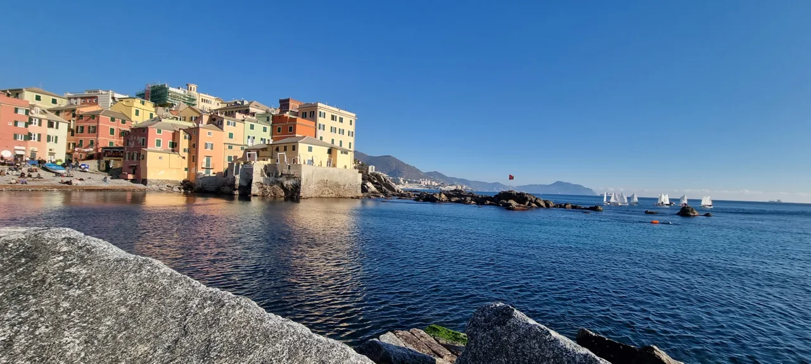

Albaro
Boccadasse

L’antico borgo marinaro si raccoglie intorno alla piccola spiaggia, tra corso Italia e Capo Santa Chiara.
Una curiosità
Le creuze oltre il capo conducono verso Vernazzola.
ESPLORA GENOVA
Passeggiate sul mare, borghi e architetture tra la Foce e Albaro.
Foce, Albaro e San Martino.
Comune · Municipi e quartieri ↗
Albaro

L’antico borgo marinaro si raccoglie intorno alla piccola spiaggia, tra corso Italia e Capo Santa Chiara.
Le creuze oltre il capo conducono verso Vernazzola.
Foce e Albaro
La passeggiata novecentesca collega la zona della Foce con Boccadasse.
Lungo il litorale si incontra l’abbazia medievale di San Giuliano.
I riferimenti descrivono il percorso urbano. Non sono indicazioni su sensi di marcia, cantieri o accessibilità.
La passeggiata novecentesca accompagna il litorale tra stabilimenti balneari, architetture e l’abbazia di San Giuliano.
Visit Genoa · Boccadasse e Corso Italia ↗ · Controllo: 17 ottobre 2026.
Questa è una prima selezione: altre strade e altri luoghi saranno aggiunti dopo la verifica delle fonti.
Scegli un altro municipio →